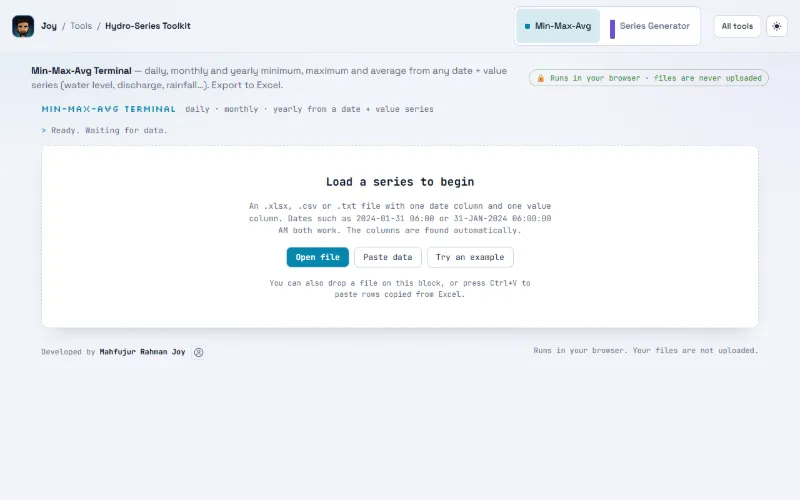

Data preparation · Stable
About Hydro-Series Toolkit
Min, max and average statistics, and a series generator, for any time series

What it does
Load a water-level, discharge or rainfall record and get the minimum, maximum and average for every day, month and year — with an interactive range chart, a sortable table and Excel export. Learns the seasonal pattern, spread and day-to-day memory of a series, then fills the missing values or adds plausible years before or after the record. Includes an accuracy test for the filled values.
Min-Max-Avg
Load a water-level, discharge or rainfall record and get the minimum, maximum and average for every day, month and year — with an interactive range chart, a sortable table and Excel export.
- Reads .xlsx, .csv, .txt or rows pasted from Excel
- Finds the date and value columns automatically
- Min–max band chart with hover values
- Export results to .xlsx
Series Generator
Learns the seasonal pattern, spread and day-to-day memory of a series, then fills the missing values or adds plausible years before or after the record. Includes an accuracy test for the filled values.
- Gap filling: model, random, linear or seasonal
- Extend by years: statistical model or resampled years
- Built-in accuracy test for filled holes
- Multi-sheet workbooks, plots and Excel export
Problem
Min-Max-Avg Terminal — daily, monthly and yearly minimum, maximum and average from any date + value series (water level, discharge, rainfall…). Export to Excel. Series Generator — fills missing values and extends a record by years, learning its seasonality, spread and day-to-day memory. Includes an accuracy test.
Method
- The generator learns the seasonal pattern, the spread, the shape of the distribution and the day-to-day memory of your series, then fills the holes inside it or adds years before or after it.
- Fill missing values: fills the holes inside the record. The best estimate follows the seasonal pattern and the day-to-day memory of your series, anchored to the values on both sides of each hole. Real data is never changed. Methods: Best estimate (model); Realistic (random, keeps variability); Straight line between neighbours; Seasonal average.
- Accuracy test: hides parts of your real record that are known, fills them again with the model and compares with the truth. Shows how far to trust the filled values for holes of that length.
- Extend the series: creates new years that behave like your record: the same seasonal pattern, spread, distribution and day-to-day memory. It continues from the last (or first) real value.
- Statistical model builds new values from what it learned about your series (seasonal level and spread, distribution, day-to-day memory). Repeat real years copies whole real years, chosen at random for each new year: exact real values, but nothing new can appear.
- Transform: how values are treated before learning. Auto uses a log scale for flow-like data (never negative, long upper tail, as in discharge) and no transform for levels. Generated flows never go below zero.
- Random seed: a number that fixes the random draw. Same seed and same settings give the same result every time.
Data
An .xlsx, .csv or .txt file with one date column and one value column. Dates such as 2024-01-31 06:00 or 31-JAN-2024 06:00:00 AM both work. The columns are found automatically. For the generator: river discharge or water level, daily or monthly, 5 years or more is best; a workbook with several sheets can be processed in one go. 'Try an example' loads a built-in series marked 'EXAMPLE · SYNTHETIC DATA'.
Bundled sample data
- Min-Max-Avg: in-app buttons 'Try an example' / 'Example' (built-in series, badge 'EXAMPLE · SYNTHETIC DATA')
- Series Generator: in-app buttons 'Try an example' / 'Example' (built-in series)
Validation
Not yet documented.
Limitations
- These are plausible synthetic years, not forecasts.
- Repeat real years copies whole real years, chosen at random for each new year: exact real values, but nothing new can appear.
- River discharge or water level, daily or monthly, 5 years or more is best.
How to cite
Not yet documented.
Source and documents
Not yet documented.